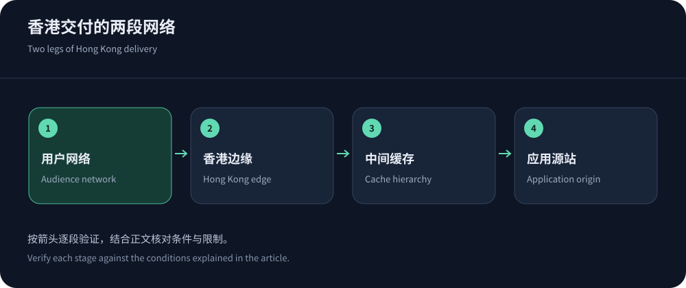
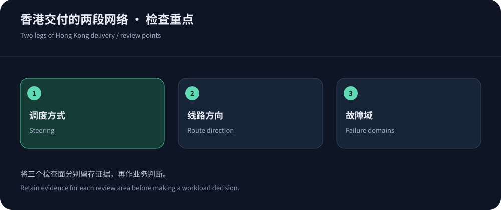

Why a large network can still feel slow
A provider’s Hong Kong facility may not serve your tier, port or security product. Capacity and routing can also shift users elsewhere. Validate the domain’s delivery path rather than a point on a network map.
Ask CDN5 and other candidates to identify product-specific regions and paths. Information was checked on 14 October 2026; this is routing analysis, not a speed ranking. See the provider comparison for shortlist positioning.
DNS scheduling and Anycast solve different problems
DNS steering is affected by resolver location and caching. Anycast lets multiple locations announce an address, with routing choosing a path; that path is not guaranteed to be geographically closest or application-fastest. Products can combine both methods.
Reverse DNS, geolocation and traceroute are clues. Routers can suppress probes and return paths can differ. Correlate provider edge identifiers, logs and HTTP measurements; a silent intermediate hop does not establish equivalent application loss.


Inspect both legs of delivery
A cache hit emphasizes the audience-to-edge leg. Misses and dynamic operations add origin transit. A Hong Kong edge does not relocate a European database. Connection reuse and correct caching help without making every transaction local.
| Path/resource | Evidence needed | Common misreading |
|---|---|---|
| Audience to edge | Record carrier/protocol timing, failures and serving edge. | Treating datacenter probes or minima as audience experience. |
| Edge to origin | Correlate fetch timing, connection reuse and application logs. | Blaming database waits on Hong Kong transit. |
| Cache hierarchy | Confirm edge/shield hits, keys, invalidation and fill paths. | Ignoring expensive uncached routes behind aggregate hit ratios. |
| Failover | Verify targets, policy/certificate state, sessions and protection. | Equating a spare address with complete recovery. |
Turn routing labels into contractual questions
JQCDN advertises Hong Kong CN2 and CDN5 lists BGP/CN2. These labels do not establish identical paths across all mainland carriers or both directions. Ask whether “multi-line” means multiple upstreams, audience steering or selectable addresses.
Also verify routes during mitigation: scrubbing and reinjection may change latency or capacity. Record regional scope and change procedures, then use the CN2 guide for deeper interpretation.
Origin placement and cache keys can matter more
Unnecessary tracking dimensions fragment cache keys; removing language, authorization or version dimensions can serve wrong content. CloudFront cache-key documentation offers a useful configuration framework. Correctness takes precedence over hit-ratio optics.
Observe refill bursts for large objects and optimize origin/database work for APIs. Additional cache layers can reduce fetches but complicate invalidation and diagnosis. Choose complexity the team can operate reliably.
Two brands do not automatically mean independent resilience
Two CDNs may share transit, facilities or an origin. Edge switching will not repair a shared database and may amplify refill pressure. Map DNS, edge, scrubbing, transit and application dependencies to identify genuine independence.
Synchronize certificates, cache keys, WAF exceptions, identity and logs. DNS changes do not move existing WebSocket sessions. Health checks should validate business responses, not merely open ports.
If two policy systems exceed team capacity, regional redundancy and protected origin fallback may be more operable. Choose multi-CDN based on consequences and verified independence.
Periodically verify standby certificates, domain eligibility and origin allowlists. Unused fallback configurations can drift and fail when finally needed.


Choose service scope deliberately
Pinning Hong Kong can disadvantage audiences in Europe or America. Compare regional control with global steering against actual revenue markets. Azure Front Door architecture illustrates global ingress and origin health concepts, not dedicated Hong Kong transit.
Mainland expansion requires a separate eligibility review; Cloudflare China Network has distinct requirements. Deliver an acceptance record covering audience, serving region, cache, origin protection, billing and rollback.